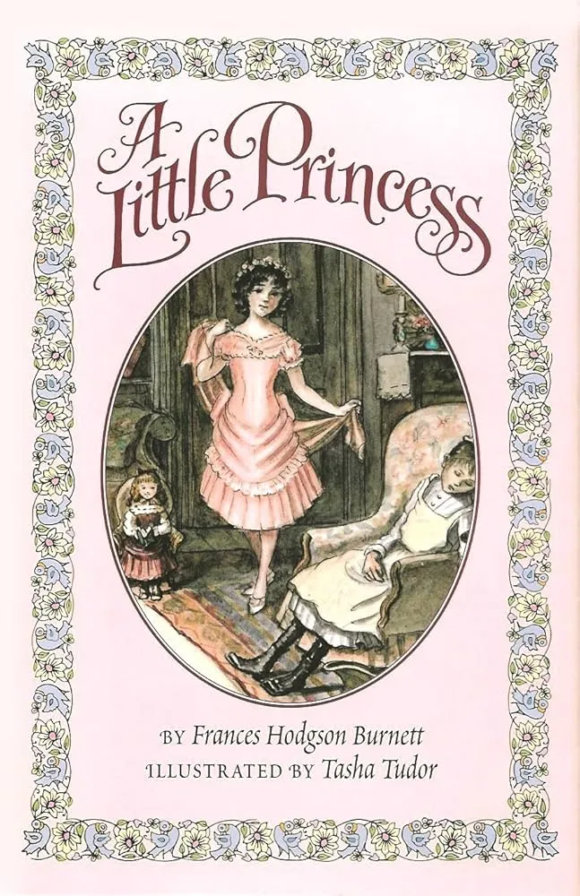
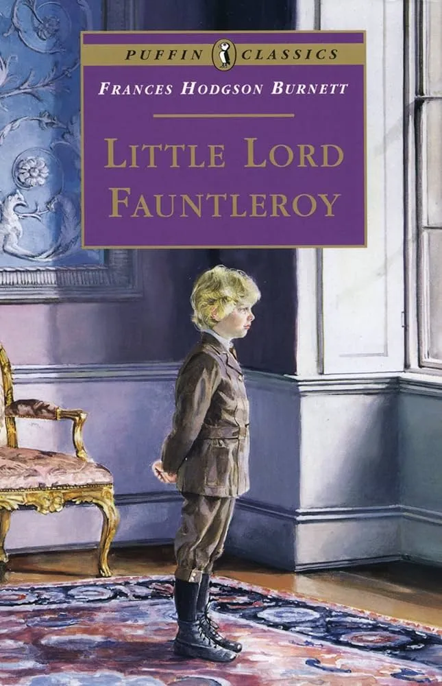
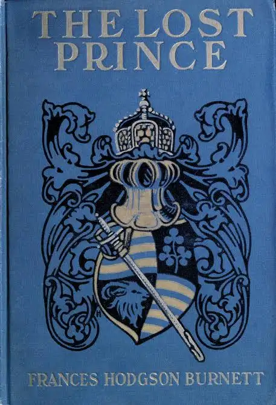
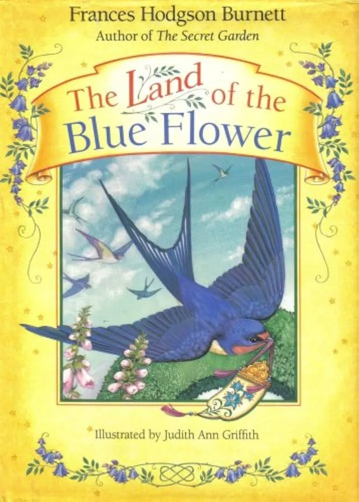

The Secret
Garden
By Frances Hodgson Burnett
Published in 1911, The Secret Garden is one of the most beloved children's classics by Frances Hodgson Burnett. It tells the story of Mary Lennox, a lonely and spoiled young girl who is sent to live with her uncle in a vast, mysterious manor house on the Yorkshire moors after the loss of her parents.
While exploring the grounds, Mary discovers a hidden, locked garden that has been abandoned for years. With the help of new friends, she begins to restore the secret garden, uncovering its beauty and magic. As the garden slowly comes back to life, it transforms not only the world around her but also the lives of everyone connected to it.
Creative Learning Activities
Engage your young readers with hands-on projects inspired by the magical world of The Secret Garden.
Design Your Dream Secret Garden
Imagine you've discovered a hidden garden of your own! Draw or paint your dream secret garden. What flowers would bloom there? Would there be a treehouse, a hidden pathway, or a magical fountain? Add all the details that make your garden special.
Create a Secret Garden Key
Every secret garden needs a secret key. Using cardboard, clay, or craft paper, design a magical key that unlocks your hidden garden. Decorate it with flowers, vines, butterflies, or symbols that represent nature and imagination.
Nature Explorer Journal
Mary discovered that nature is full of surprises. Take a walk in your garden, park, or neighborhood and create a Nature Explorer Journal. Draw the birds, flowers, insects, and trees you find. Write down interesting observations and create your own collection of nature discoveries.
Discussion Points & Themes
The Secret Garden is a timeless classic that celebrates friendship, curiosity, resilience, and the healing power of nature.
The Secret Garden
Why do you think the garden was locked away for so many years? Discuss how discovering the garden changed Mary and why some places can feel magical when we take the time to care for them.
Growth & Change
At the beginning of the story, Mary is lonely and unhappy. How does she change throughout the book? Can people grow and change just like plants in a garden?
Friendship
Mary, Dickon, and Colin help one another in different ways. How do friendships make difficult times easier? What qualities make a good friend?
Nature & Wellbeing
The garden becomes a place of healing and happiness. How does spending time outdoors affect the characters? What role does nature play in helping them feel better?
Vocabulary List
Introduce these beautiful words from The Secret Garden to help young readers expand their vocabulary and understanding of the story.
Secret
Something hidden or kept unknown from others.
Mary discovers a secret garden that has been locked away for years.
Garden
A piece of land where flowers, plants, fruits, or vegetables are grown.
The garden becomes the heart of the story and a place of transformation.
Moor
A large area of open land covered with grass, shrubs, and wild plants.
Misselthwaite Manor is surrounded by the mysterious Yorkshire moors.
Robin
A small bird with a cheerful song.
A friendly robin helps Mary discover clues about the secret garden.
Restore
To bring something back to its original condition.
Mary and her friends work together to restore the neglected garden.
Curiosity
A strong desire to learn, explore, or discover something new.
Mary's curiosity leads her to uncover many secrets throughout the story.
Friendship
A relationship based on kindness, trust, and support.
The friendships formed in the garden help the characters grow and heal.
Bloom
When a flower opens and begins to grow beautifully.
As the garden blooms, the lives of the characters bloom too.

Meet Frances Hodgson Burnett
Beloved Children's Author
Frances Hodgson Burnett was a British-American novelist and playwright known for creating some of the most treasured children's classics of all time.
Born in England and later moving to the United States, she wrote stories that celebrated imagination, resilience, friendship, and the transformative power of nature.
She is best known for The Secret Garden, a timeless classic that has inspired generations of readers with its message of hope, healing, and personal growth.
Start a Reading Habit
Explore more magical adventures and classic stories for young readers.

A Little Princess
Frances Hodgson Burnett

Little Lord Fauntleroy
Frances Hodgson Burnett

The Lost Prince
Frances Hodgson Burnett

The Land of the Blue Flower
Frances Hodgson Burnett
Start Your Child's
Reading Journey Today
Whether for bedtime, the classroom, or a gift — this book is a treasure every child deserves.